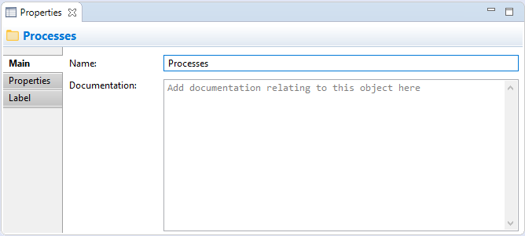
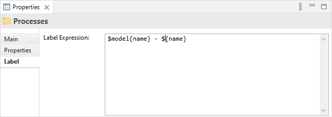

In the "Documentation" text control, URLs that start with "http://" "https://" or "ftp://" will show as a hyperlink. Pressing the Ctrl / Command key will change the cursor to a "hand" cursor and you can open the link in a Browser.
In the "Documentation" text control, URLs that start with "http://" "https://" or "ftp://" will show as a hyperlink. Pressing the Ctrl / Command key will change the cursor to a "hand" cursor and you can open the link in a Browser.Selecting a user-created folder in the Model Tree means that you can edit or view the following properties in the Properties Window.
The Main Tab
Editing the "Main" Properties for a Folder
| Name: | The name of the Folder - this can only be edited for user-created sub-folders. |
| Documentation: | A space to enter some user documentation relating to the folder |
In the "Documentation" text control, URLs that start with "http://" "https://" or "ftp://" will show as a hyperlink. Pressing the Ctrl / Command key will change the cursor to a "hand" cursor and you can open the link in a Browser.
The Properties Tab
For more information about creating and managing User Properties see User Properties.
The Label Tab
Adding a Label Expression
Here you can set how child objects' labels in a folder are displayed in the Model Tree. By default, an object's name will be displayed. Using a label expression, you can choose what is displayed for the element in the Model Tree. For example you may wish to display the element's name and its model. Or you may wish to display the value of one or more of its properties. Note - a label expression for a folder affects only its child objects, not the folder itself.
For a full list of expression types please refer to the Archi Wiki.